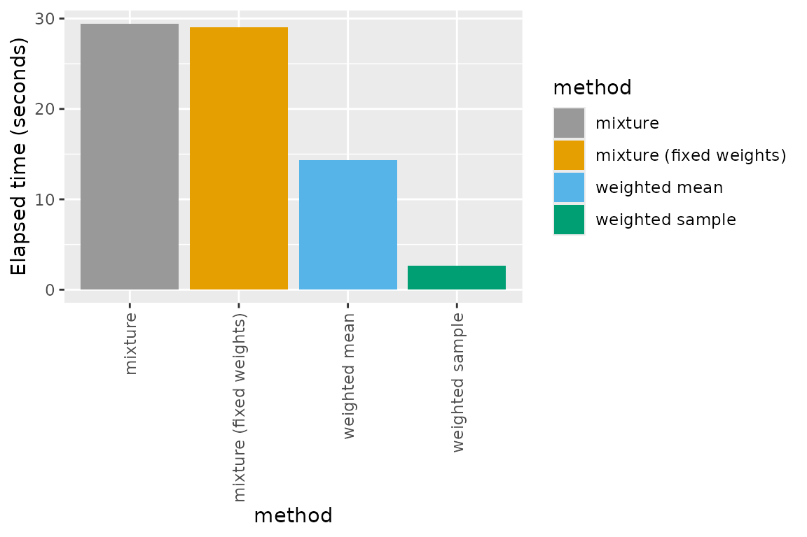

Confidence Intervals for Hazard Concentrations
ssdtools Team
2025-01-14
Source:vignettes/articles/confidence-intervals.Rmd
confidence-intervals.RmdBootstrap confidence intervals
Bootstrapping is a resampling technique used to obtain confidence
intervals (CIs) for summary statistics. The team have explored the use
of alternative methods for obtaining the CIs of
estimates. This included using the closed-form expression for the
variance-covariance matrix of the parameters of the Burr III
distribution, coupled with the delta-method, as well as an alternative
bootstrap method for the inverse Pareto distribution based on
statistical properties of the parameters (D. Fox
et al. 2022). In both cases, it appeared that these methods can
give results similar to other traditional bootstrapping approaches in
much less time, and are therefore potentially worth further
investigation. However, implementation of such methods across all the
distributions in ssdtools would be a substantial
undertaking.
The revised version of ssdtools retains the computationally intensive
bootstrapping method to obtain CIs. We recommend a minimum bootstrap
sample of 1,000 (the current default - see argument
nboot = 1000 in ssd_hc()). However, more
reliable results can be obtained using samples of 5,000 or 10,000. We
recommend 10,000 bootstrap samples for final reporting.
Parametric versus non-parametric bootstrapping
Burrlioz
uses a non-parametric bootstrap method to obtain CIs on the
estimate. Non-parametric bootstrapping is carried out by repeatedly
resampling the raw data with replacement, and refitting the distribution
many times. The 95% confidence limits (CLs) are then obtained by
calculating the lower 0.025th and upper 0.975th quantiles of the
resulting
estimates across all the bootstrap samples (typically > 1,000). This
type of bootstrap takes into account uncertainty in the distribution fit
based on uncertainty in the data.
The ssdtools package by default uses a parametric
bootstrap (although non-parametric bootstrapping is also available).
Instead of resampling the data, parametric bootstrapping draws a random
a set of new data (of the same sample size as the original) from the
fitted distribution to repeatedly refit the distribution. Upper and
lower 95% bounds are again calculated as the lower 0.025th and upper
0.975th quantiles of the resulting
estimates across all the bootstrap samples (again, typically >
1,000). This approach attempts to capture the uncertainty in the data
for a sample size from a given distribution, but it assumes no
uncertainty in that original fit.
Using simulation studies the ssdtools team examined bias and compared the resulting coverage of the parametric and non-parametric bootstrapping methods (D. Fox et al. 2022). They found that coverage was better using the parametric bootstrapping method, and this has been retained as the default bootstrapping method in the update to ssdtools although non-parametric bootstrapping is currently the only method available for censored data.
Bootstrapping model-averaged SSDs
Bootstrapping to obtain CIs for individual distributions is
relatively straightforward. However, obtaining bootstrap CIs for
model-averaged SSDs requires careful consideration, as the procedure is
subject to the same problems evident when obtaining model-averaged
estimates (see the Model
Averaging SSDs vignette). Model-averaged estimates and/or CIs can be
calculated by treating the distributions as constituting a single
mixture distribution versus ‘taking the (weighted) mean’. When
calculating the model-averaged estimates treating the distributions as
constituting a single mixture distribution ensures that
ssd_hc() is the inverse of ssd_hp().
Version 2.0 of ssdtools supports three main methods for
obtaining bootstrap CIs, and these are discussed in detail below.
Weighted arithmetic mean
Prior to version 2.0, ssdtools calculated the
model-averaged estimates and CLs as the weighted (by the AICc values)
arithmetic means of the estimates and upper and lower CLs obtained via
bootstrapping from each of the candidate distributions independently.
This method is not only computationally inefficient but may lead to
incorrect results (as described in the Model
Averaging SSDs vignette) and has been shown via simulations studies
to result in CIs with very low coverage. The current version of
ssdtools retains this functionality by setting
ci_method = "weighted_arithmetic".
library(ssdtools)
fit <- ssd_fit_dists(data = ssddata::ccme_silver)
set.seed(99)
ssd_hc(fit, ci = TRUE, multi_est = FALSE, ci_method = "weighted_arithmetic")
#> # A tibble: 1 × 11
#> dist proportion est se lcl ucl wt method nboot pboot samples
#> <chr> <dbl> <dbl> <dbl> <dbl> <dbl> <dbl> <chr> <dbl> <dbl> <I<lis>
#> 1 average 0.05 0.192 0.216 0.0679 0.861 1 paramet… 1000 0.998 <dbl>Use of this method is not recommended as it is both technically incorrect and computationally inefficient and only retained to allow users to reproduce previous results.
Weighted mixture distribution
A more theoretically correct way of obtaining model averaged
estimates (see the Model Averaging
SSDs vignette) and CLs values is to consider the set of
distributions as a mixture distribution where the individual
distributions are weighted by the AICc values. When we consider the
model set as a mixture distribution, bootstrapping is achieved by
sampling from the mixture distribution. A method for sampling from
mixture distributions has been implemented in ssdtools, via
the function ssd_rmulti(), which will generate random
samples from a weighted combination of the distributions currently
implemented in ssdtools as a mixture distribution.
When bootstrapping from the mixture distribution, a question arises whether the model weights should be re-estimated for every bootstrap sample, or fixed at the values estimated from the models fitted to the original data? This is an interesting question that may warrant further investigation, however our current view is that they should be fixed at their nominal values in the same way that the component distributions to be used in bootstrapping are informed by the fit to the original data. Using simulation studies we explored the coverage and bias of CI values obtained without and without fixing the distribution weights, and results indicate little difference.
The following code can be used to obtain CIs for
estimates via bootstrapping from the weighted mixture distribution
(using ssd_rmulti()), with and without fixed weight values
respectively.
# Using the multi boostrapping method with fixed weights
ssd_hc(fit, ci = TRUE, ci_method = "multi_fixed")
#> # A tibble: 1 × 11
#> dist proportion est se lcl ucl wt method nboot pboot samples
#> <chr> <dbl> <dbl> <dbl> <dbl> <dbl> <dbl> <chr> <dbl> <dbl> <I<lis>
#> 1 average 0.05 0.190 0.207 0.0194 0.824 1 paramet… 1000 1 <dbl>
# Using the multi boostrapping method without fixed weights
ssd_hc(fit, ci = TRUE, ci_method = "multi_free")
#> # A tibble: 1 × 11
#> dist proportion est se lcl ucl wt method nboot pboot samples
#> <chr> <dbl> <dbl> <dbl> <dbl> <dbl> <dbl> <chr> <dbl> <dbl> <I<lis>
#> 1 average 0.05 0.190 0.211 0.0223 0.838 1 paramet… 1000 1 <dbl>Use of this method (without or without fixed weights) is theoretically correct, but is computationally very inefficient.
Weighted bootstrap sample
The developers of ssdtools investigated a third method
for obtaining CIs for the model-averaged SSD. This method bootstraps
from each of the distributions individually proportional to
distributions AICc weight and then combines these into a pooled
bootstrap sample before calculating the 95% CLs as the lower 0.025th and
upper 0.975th quantiles.
Pseudo-code for this method is as follows:
For each distribution in the
fitdistsobject, the proportional number of bootstrap samples to draw (nboot_vals) is found usinground(nboot * weight), wherenbootis the total number of bootstrap samples and weight is the AICc based model weights for each distribution based on the originalssd_fitdist()fit.For each of the
nboot_valsfor each distribution, a random sample of size N is drawn (the total number of original data points included in the original SSD fit) based on the estimated parameters from the original data for that distribution.The random sample is re-fit using that distribution.
is estimated from the re-fitted bootstrap fit.
The estimates for all
nboot_valsfor all distribution are then pooled across all distributions, and quantile() is used to determine the lower and upper confidence bounds for this pooled weighted bootstrap sample of values.
This method does not draw random samples from the mixture
distribution using ssd_rmulti. While mathematically the method
shares some properties with obtaining
estimates via summing the weighted values (weighted arithmetic mean),
simulation studies have shown that, as a method for obtaining CIs, this
pooled weighted sample method yields similar CIs and coverage to the
ssd_rmulti() method but is computationally much faster
This method which is recommended is currently the default method in
ssdtools and so can be implemented by simply calling
ssd_hc().
# Using a weighted pooled bootstrap sample
ssd_hc(fit, ci = TRUE)
#> # A tibble: 1 × 11
#> dist proportion est se lcl ucl wt method nboot pboot samples
#> <chr> <dbl> <dbl> <dbl> <dbl> <dbl> <dbl> <chr> <dbl> <dbl> <I<lis>
#> 1 average 0.05 0.190 0.214 0.0181 0.816 1 paramet… 1000 0.999 <dbl>Comparing bootstrapping methods
We have undertaken extensive simulation studies comparing the
implemented methods, and the results of these are reported in D. R. Fox et al. (2024). For illustrative
purposes, here we compare upper and lower CLs using only a single
example data set, the silver data set from the Canadian Council of
Ministers of the Environment (CCME) in the ssddata
package.
Using the other default settings for ssdtools, we
compare the upper and lower CLs for the four bootstrapping methods
described above. The upper CLs are relatively similar among the four
methods.

However, the lower CL obtained using the weighted arithmetic mean
(the default method implemented in earlier versions of
ssdtools) is much higher than the other three methods,
potentially accounting for the relatively poor coverage of this method
in our simulation studies.

Given the similarity of the upper and lower CLs of the weighted bootstrap sample method compared to the potentially more theoretically correct, but computationally more intensive weighted mixture method (via ssd_rmulti()), we also compared the time taken to undertake bootstrapping across the methods.
Using the default 1,000 bootstrap samples, the elapsed time to
undertake bootstrapping for the mixture method was 29.07 seconds,
compared to 2.66 seconds for the weighted bootstrap sample. This means
that the weighted bootstrap method is ~ 11 times faster, representing a
considerable computational saving across many SSDs. For this reason,
this method is currently set as the default method for confidence
interval estimation in ssdtools.

References
Licensing
Copyright 2015-2023 Province of British Columbia
Copyright 2021 Environment and Climate Change Canada
Copyright 2023-2024 Australian Government Department of Climate Change,
Energy, the Environment and Water
The documentation is released under the CC BY 4.0 License
The code is released under the Apache License 2.0